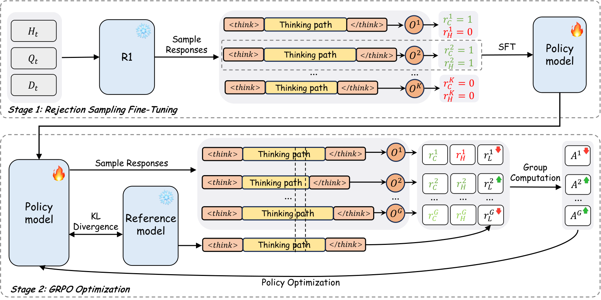
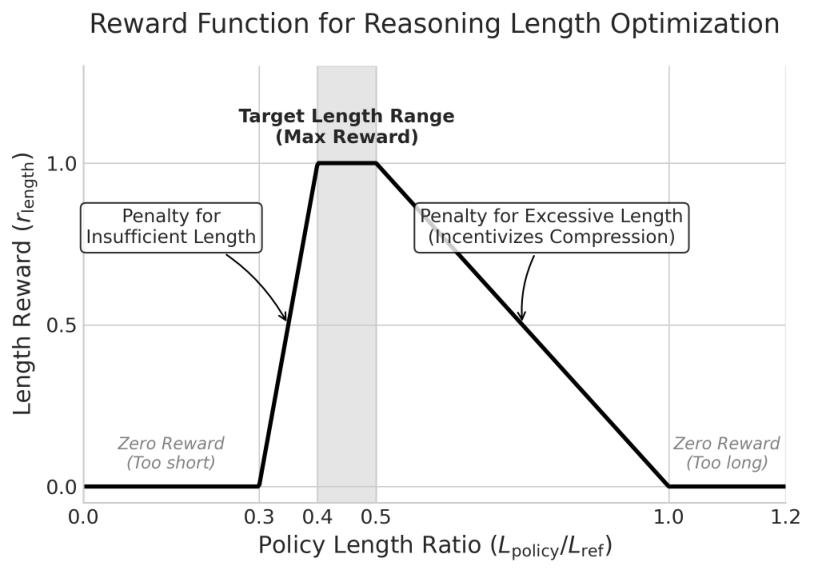
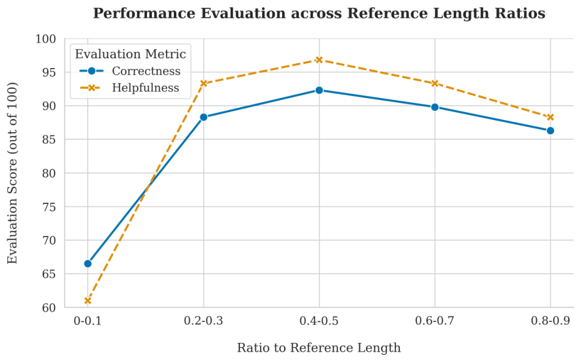
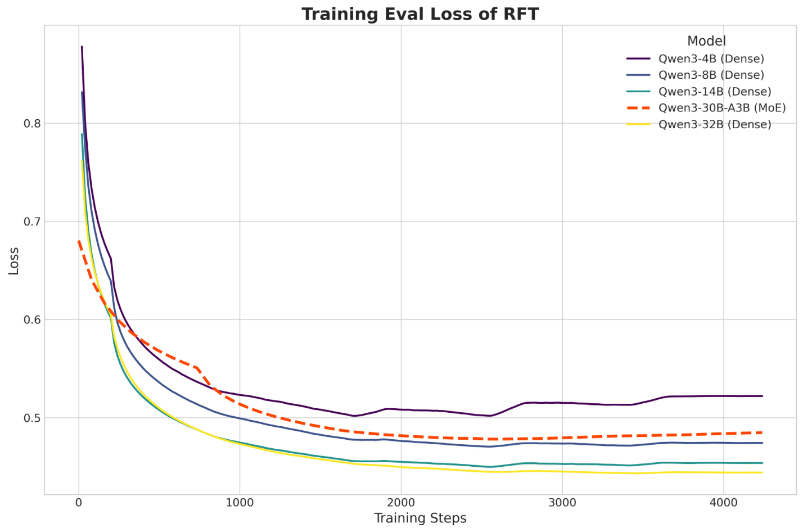
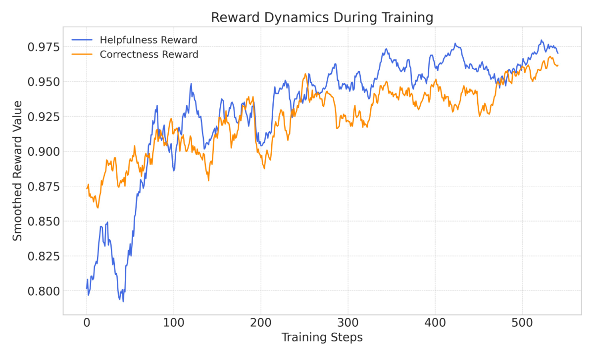
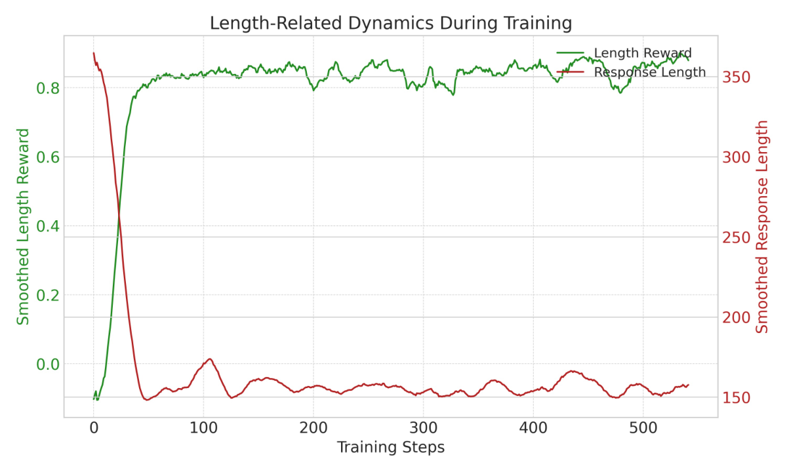

电商直播要求数字人及时回复观众弹幕，以维持流畅对话和自然的用户体验。这超出了普通聊天机器人的要求：回复不仅要正确、有帮助，还必须具备极低延迟。大推理模型虽然推理能力强，但其检索增强生成（RAG）系统往往具有较高推理延迟。为协调质量与延迟，我们提出两阶段优化框架 LiveThinking。第一阶段通过拒绝采样微调（RFT），将大型教师推理模型的能力迁移至轻量模型，降低计算成本；但学生仍会继承教师冗长的推理路径，超过延迟预算。第二阶段使用组相对策略优化（GRPO）强化学习，通过兼顾简洁性、正确性与帮助性的奖励直接压缩推理路径。LiveThinking 在公开基准与真实部署中均表现良好：在多跳推理数据集 MuSiQue 上，30B MoE 模型（激活 3B）相比 670B 教师的 EM 提高 12.3、F1 提高 10.2，输出缩短 41%，解码成本降低 95%。部署于淘宝直播后，计算成本降低 30 倍，其中蒸馏贡献 12 倍、路径压缩贡献 2.5 倍；回复正确性提高 3.3%、帮助性提高 21.8%，并带动下单转化与多轮对话等商业及互动指标提升，验证了该方法在高流量生产环境中的有效性。
AI 直播使用对话智能体充当实时电商助手，形成了具有挑战性的 RAG 场景（Lewis et al., 2020；Zhu et al., 2023；Gao et al., 2023）。系统必须动态检索相关商品信息，在严格延迟限制下生成事实准确的回复。正确性、帮助性与低延迟都直接影响用户参与和销售表现。
OpenAI-o1（OpenAI, 2024）、Gemini 2.5（Comanici et al., 2025）和 DeepSeek-R1（Guo et al., 2025a）等大推理模型擅长复杂推理，能够生成准确、细致的回答，这对于直播电商中的正确性和用户导向的帮助性十分重要。但大参数规模和冗长推理轨迹使其端到端延迟可能达到数十至数百秒。直播互动依赖及时响应，难以接受这种等待，因此这类模型在实时、低延迟场景中仍面临部署挑战。
我们提出实用的两阶段优化框架。第一阶段将 670B 教师 DeepSeek-R1 蒸馏至 Qwen3-30B-A3B（Yang et al., 2025），后者推理时只激活 3B 参数。使用 LLM Judge 过滤不正确或缺乏帮助性的结果，通过 RFT（Gou et al., 2021；Gupta and Agrawal, 2022）让学生学习优质推理轨迹，以更低计算成本接近教师质量。但模仿学习也使学生复现教师冗长的思考过程，即使模型变小，端到端延迟仍不满足工业要求。第二阶段使用 GRPO（Shao et al., 2024）强化学习，联合优化推理简洁性、正确性和帮助性，显式缩短轨迹。在降低延迟的同时，模型还提高了输出质量。
我们在工业数据、公开基准和生产环境中验证框架。在 Tblive-E-Commerce QA 上，最终模型的计算成本降低 30，正确性和帮助性分别超过 670B 教师 3.3% 和 21.8%。在 MuSiQue 多跳推理集上，EM 提高 12.3、F1 提高 10.2，输出缩短 41%，解码成本降低 95%。这些结果表明，框架可以兼顾可部署交互系统所需的回复质量、推理效率与延迟。2025 年 7 月，我们将其部署于淘宝直播 DigitalLive 服务，替换原有 14B 稠密模型。上线后下单转化率提高 59.0%，促进了 GMV 增长；多轮对话用户占比提高 50.5%，表明用户参与度提升。
本文贡献如下：
面向实时部署的两阶段优化框架。将知识蒸馏与强化学习结合，协调工业 AI 助手中的正确性、帮助性和低延迟。
识别并缓解蒸馏模型继承的低效推理。常规蒸馏会复现教师的冗长轨迹；我们使用有针对性的 GRPO 阶段压缩推理，同时保持输出质量。
在大规模电商直播中验证高效 MoE 推理模型。该方法显著降低计算开销，并超越教师的回复质量，说明高质量、低延迟推理能够应用于真实交互场景。
强化学习通过奖励建模使模型符合人类偏好，缓解幻觉、有害内容和指令遵循失败等对齐问题（Ouyang et al., 2022）。RLAIF 使用 LLM Judge 自动评分（Lee et al., 2023），PPO（Schulman et al., 2017）等方法则常针对帮助性或无害性等单一目标优化。GRPO（Guo et al., 2025a）通过候选回复组内的相对优势估计，提高了训练效率与稳健性。
通过强化学习增强 LLM 推理能力已成为重要方向（Guo et al., 2025b；OpenAI, 2025），但常伴随过度思考：模型生成计算成本高、篇幅冗长的思维链（CoT，Chen et al., 2024）。一类研究在强化学习中加入长度奖励或惩罚以鼓励简洁，分析推理长度与稳定性的权衡（Yeo et al., 2025），并采用 O1-Pruner（Luo et al., 2025）、Kimi k1.5（Team et al., 2025）等强化学习裁剪策略。RAG-RL（Huang et al., 2025）使用 GRPO 增强 RAG 推理能力。这些工作以及其他研究（Hou et al., 2025；Ning et al., 2025；Yuan et al., 2025；Xiang et al., 2025）都尝试惩罚冗长输出，在保持性能的同时缩短 CoT。
| 场景 | 不正确的回复 | 正确的回复 |
|---|---|---|
| 背景：直播间有多个商品链接，用户询问具体商品细节。问题：“大肉粽里有肥肉吗？” | 回复：“有用户问大肉粽有没有肥肉。8 号链接五芳斋粽子礼盒包含红烧五花肉粽，配料明确写着三分肥两分瘦，可以查看 8 号详情页。”评价：不正确。模型将属于 9 号商品的红烧五花肉信息错误归给 8 号礼盒，产生事实幻觉，损害了准确性和用户信任。 | 回复：“有用户问大肉粽是否有肥肉。9 号红烧五花肉粽和 5 号猪肉粽明确包含五花肉或瘦肉，五花肉是肥瘦相间的；8 号礼盒的配料只写猪肉，没有说明肥瘦，可以参考商品图片。”评价：正确。模型准确综合多个来源，区分明确标注和描述不清的商品，回答精确、全面且符合事实。 |
| 场景 | 缺乏帮助性的回复 | 有帮助性的回复 |
| 背景：用户寻找商品列表中没有的产品。问题：“有 iPhone 11 的钢化膜吗？” | 回复：“有用户问 iPhone 11 钢化膜。直播间目前没有，可以咨询客服看看其他渠道有没有。”评价：缺乏帮助性。虽然缺货判断正确，但回复过于简略，直接转交客服，没有利用现有商品信息提供额外价值。 | 回复：“有用户问 iPhone 11 钢化膜。13 号适用于 iPhone 15、14 Pro Max 等，12 号适用于 12 Pro、13 Pro，1 号是手机壳。列表里没有 iPhone 11 钢化膜，可能缺货或未上架，可以再查看链接或咨询客服其他型号。”评价：有帮助性。尽管所求商品不存在，模型仍主动说明现有型号及链接，提供额外信息、管理用户预期，并可能引导用户发现相关在售商品。 |
我们定义对话式电商助手任务：给定观众的商品问题，生成正确且有帮助的回复。在第 轮交互中，输入包括检索到的商品文档 （规格与属性）、当前自然语言问题 和此前对话历史 ；输出包括逐步推理过程 和面向观众的最终自然语言回复 。
使用 LLM-as-a-Judge 从两个维度评估回复：
衡量回复与商品知识的事实一致性：
当且仅当所有陈述都能被文档 验证、与历史 保持逻辑一致，并直接且切题地回答当前问题 时，回复被判为正确。这既要求事实可靠，也排除答非所问。
正确性是基础，但单独优化它可能使模型过度保守，为减少幻觉而只生成极少信息。此类回复虽然事实无误，却无法有效帮助用户，体验较差。
因此引入帮助性作为补充，鼓励模型在准确性与实用性之间取得平衡，提供更丰富、有价值的信息：
有帮助的回复不仅正确回答问题，还应基于文档主动提供相关补充信息，结合对话语境 预判并满足用户隐含需求。
我们将 Judge 与人工判断对照验证。先为数百条回复标注正确性和帮助性，将两者视为独立的二分类任务。每条由两人标注，意见不一致的样本被剔除，再分别将正负样本平衡至 1:1，形成两个基准集。经过迭代优化评审提示词，Judge 在正确性集上达到 83% 准确率，在帮助性集上达到 84%，与人工判断较为一致。

第一阶段通过 RFT 将电商推理能力迁移到轻量模型；第二阶段采用 GRPO 压缩推理路径，在保持回复质量的同时提高效率。
我们采用三个步骤，将 670B 推理 MoE 教师（激活 37B）的能力迁移至轻量学生模型：
给定无标注电商语料 ，使用教师 进行温度采样，为每个样本 生成 条不同候选轨迹 。由此得到候选集合，每个完整数据点包含原始输入和生成输出。
为保证蒸馏质量，只保留同时正确且有帮助的轨迹。我们使用 DeepSeek-R1 作为 Judge，按第 3 节的指标评估。
对于每个输入 ，检查其 条生成轨迹。若至少有一条 同时满足两个条件，则选取其中一条加入最终蒸馏集 ；若 条均不通过，则丢弃整个输入。数据集定义如下：
其中 ，分别应用正确性判别 与帮助性判别 。子集符号 表示每个原始输入至多选取一条轨迹。
学生 是 MoE 模型，训练目标结合主要的序列生成损失与负载均衡辅助损失：
主任务损失 使模型重建教师输出：
输入 为拼接后的上下文，目标序列 编码思考 和回复 。MoE 辅助损失 促进 token 在专家间均衡路由，其权重由 控制，以稳定训练并形成有效的专家分工。
4.2. 通过强化学习联合优化推理效率、帮助性与正确性
RFT（第 4.1 节）既迁移知识，也继承教师冗长的推理。我们进一步使用强化学习联合优化效率、正确性与帮助性。
将回复生成建模为马尔可夫决策过程。状态 是拼接上下文 ；动作 是参数为 的学生策略 自回归生成的 token 序列 。一个 episode 包含完整动作 的生成，并在输出 EOS 时终止。
我们采用多目标强化学习提高推理效率并保证回复质量：长度奖励优化计算效率，正确性和帮助性奖励约束模型，防止效率优化损害输出质量。
长度奖励 ：相对于参考模型的输出优化推理效率：
长度奖励 根据策略输出长度 与可接受范围的差异计算。该范围由参考序列长度 确定，参考模型为 RFT 后的学生。定义上界 和下界 ；系数 控制压缩比例， 防止过度压缩。偏差 衡量 超出区间 的程度，最终奖励 对此施加惩罚；超参数 为容忍范围，控制奖励随偏差下降的速度。

正确性奖励 ：检查回复是否忠实于商品文档，以减少幻觉：
取值为 1 表示 与 完全一致，并且无编造地回答 。
帮助性奖励 ：评估实际效用，防止模型过于保守：
取值为 1 表示 提供了可执行的购物建议，并满足 中的隐含需求。
为获得归一化的策略优化信号，先为批次中的 条回复计算组合奖励 （式 1），它是正确性、帮助性与长度奖励的加权和。再按式 2，使用组内奖励均值 和标准差 对 归一化，得到优势 。这将原始奖励转换为标准分数，为策略更新提供稳定信号；小常数 （例如 ）用于保证数值稳定。
| (1) | ||||
| (2) |
直观而言，该机制奖励小批次中优于平均水平的回复，使训练更稳定，对奖励绝对尺度的依赖更小。
GRPO 目标最大化经优势与正则项约束的收益：
其中 为裁剪范围， 控制 KL 惩罚，且 、。与标准 PPO 相比，GRPO 在复杂、多目标奖励场景中具有更好的训练效率和稳定性。
在两个数据集上评估，每个包含 8000 条训练样本和 400 条测试样本。
该内部数据集来自电商平台的真实购物直播。每条包含历史对话、观众实时问题，以及按意图动态检索的结构化商品信息，覆盖噪声对话理解和基于商品事实回答等工业挑战。
MuSiQue 是公开多跳问答基准，要求模型综合多个段落，任何单篇文档都不足以回答。我们采用干扰文档设置：每道题约配 10 篇文档，其中大部分无关。这检验模型从噪声和知识密集上下文中识别并关联事实的能力，与工业数据形成互补。
不同测试集采用不同协议：Tblive-E-Commerce QA 按第 3.2 节的 Judge 框架评估正确性（C）和帮助性（H）；MuSiQue 使用标准的精确匹配率（EM）和 F1 衡量事实准确性。
| 蒸馏超参数 | GRPO 超参数 | ||
|---|---|---|---|
| 参数 | 取值 | 参数 | 取值 |
| 教师模型 | DeepSeek-R1 | 每个输入的 rollout 数（） | 8 |
| 基座模型 | Qwen3-30B-A3B | 正确性权重（） | 0.4 |
| LLM Judge 模型 | DeepSeek-R1 | 帮助性权重（） | 0.3 |
| 采样温度（） | 0.7 | 长度权重（） | 0.3 |
| 采样数（） | 4 | 长度比例上界（） | 0.5 |
| 批次大小 | 2 | 长度比例下界（） | 0.4 |
| 学习率 | 1.5e-6 | 长度容忍度（） | 0.1 |
| 0.01 | 学习率 | 2.5e-6 | |
| 批次大小 | 8 | ||
两个训练阶段采用不同基础设施。蒸馏通过内部基于 Megatron 的框架，对过滤后的 进行大规模分布式 RFT。强化学习采用 ROLL（Team and Contributors, 2025）实现第 4.2 节的 GRPO。Tblive-E-Commerce QA 使用第 4.2 节的正确性、帮助性和长度组合奖励；MuSiQue 保留长度奖励，用 EM 二值奖励 替换正确性评估，并因其非对话性质省略帮助性。详细超参数见表 2。
| 模型 | 参数量（十亿） | Tblive-E-Commerce QA | MuSiQue | |||||||
|---|---|---|---|---|---|---|---|---|---|---|
| 总参数 | 激活参数 | 正确性 | 帮助性 | TPR | 解码 TFLOPs | EM | F1 | TPR | 解码 TFLOPs | |
| DeepSeek-R1 | 670 | 37 | 89.0 | 75.0 | 421 | 31.15 | 41.2 | 57.0 | 807 | 59.72 |
| Qwen3-235B-A22B | 235 | 22 | 78.8 | 71.5 | 387 | 17.03 | 38.5 | 50.0 | 881 | 38.76 |
| Qwen3-32B | 32 | 32 | 76.5 | 76.3 | 368 | 23.55 | 37.5 | 52.5 | 769 | 49.22 |
| Qwen3-30B-A3B | 30 | 3 | 67.3 | 56.5 | 396 | 2.38 | 35.0 | 46.8 | 995 | 5.97 |
| DeepSeek-R1-Distilled-Llama-8B | 8 | 8 | 20.8 | 34.5 | 332 | 5.31 | 17.5 | 29.0 | 625 | 10.00 |
| DeepSeek-R1-Distilled-Llama-8B + RFT | 8 | 8 | 75.8 | 77.8 | 334 | 5.34 | 38.3 | 50.0 | 734 | 11.74 |
| DeepSeek-R1-Distilled-Llama-8B + RFT + RL | 8 | 8 | 86.3 | 93.8 | 152 | 2.43 | 46.0 | 58.4 | 412 | 6.59 |
| Qwen3-30B-A3B + RFT | 30 | 3 | 81.3 | 77.0 | 353 | 2.12 | 46.8 | 58.7 | 762 | 4.57 |
| Qwen3-30B-A3B + RL | 30 | 3 | 87.5 | 90.0 | 152 | 0.91 | 50.2 | 65.8 | 450 | 2.70 |
| Qwen3-30B-A3B + RFT + RL（LiveThinking） | 30 | 3 | 92.3 | 96.8 | 153 | 0.92 | 53.5 | 67.2 | 473 | 2.84 |
表 3 给出工业与公开基准结果。最终的 LiveThinking（Qwen3-30B-A3B + RFT + RL）在保持工业级效率的同时，在各项指标上达到最佳表现。
在 Tblive-E-Commerce QA 上，LiveThinking 的正确性为 92.3%、帮助性为 96.8%，显著超过 670B 教师 DeepSeek-R1（89.0%、75.0%）及所有基线。其总参数小 22、激活参数仅 3B，解码计算量降至 0.92 TFLOPs，相比教师减少超过 30，输出缩短超过 2.7。这说明精心优化的小模型可以在质量和效率上超越大教师。更多案例见附录 C。
MuSiQue 上同样取得提升：EM 为 53.5、F1 为 67.2，超过 670B 教师的 41.2 和 57.0，在计算成本相当或更高的模型中表现突出。回复由 807 缩短至 473 tokens，说明方法不局限于领域内数据。
稠密 8B Llama 基座也有明显收益：DeepSeek-R1-Distilled-Llama-8B + RFT + RL 的正确性由 20.8% 升至 86.3%，帮助性由 34.5% 升至 93.8%，TPR 从 332 降至 152，验证了两阶段方法对不同架构的适用性。
在 Qwen3-30B-A3B 上进行两阶段消融（表 3）。RFT 将正确性从 67.3% 提至 81.3%，帮助性从 56.5% 提至 77.0%，证明其能迁移高质量推理行为，但 TPR 仅由 396 降至 353，仍继承教师的冗长模式。单独 RL 达到 87.5% 正确性、90.0% 帮助性和 152 TPR，说明策略优化可同时改善效率与质量。先 RFT 再 RL 则进一步达到 92.3% 与 96.8%：RFT 提供正确多步推理的行为先验，使 RL 能在延迟限制下更有效地改进。两者互补，联合效果超过任一阶段单独使用。
| 方法 | 正确性 | 帮助性 |
|---|---|---|
| SFT | 81.0 | 72.0 |
| RFT | 81.3 | 77.0 |
为验证 RFT，将其与不做数据过滤、直接学习同一教师的标准 SFT 比较。表 4 显示 RFT 在两项指标上均更好，帮助性提高 5.0%。在开放式电商问答中，正确性可由商品事实明确约束，SFT 较容易模仿保留；帮助性则依赖表达清晰度、结构和意图理解，不同教师轨迹差异较大。Judge 过滤确保学生只学习优质、清楚的回答。因此，迁移以用户为中心的复杂推理能力需要精细筛选数据，而非无差别模仿。

强化学习压缩需要协调简洁性与质量。我们调整奖励中的 和 ，训练不同目标长度的模型，结果见图 4。约束过强时，推理缺少必要中间步骤，正确性与帮助性下降；适度放宽后性能提升，在中间区间达到峰值，兼顾足够推理结构与简洁表达。约束过弱又会产生重复前提和无关思考，导致性能下降。我们寻找能显著减少平均 token 数、降低延迟且不损害质量的工作点，该实验验证了最终模型所用的长度目标。
| 奖励 | 正确性 | 帮助性 | TPR |
|---|---|---|---|
| + | 91.5 | 95.0 | 349 |
| + | 87.3 | 72.3 | 145 |
| + | 79.3 | 96.8 | 152 |
| 完整奖励 | 92.3 | 96.8 | 153 |
我们分别移除正确性 、帮助性 和简洁性 ，以检验各部分是否必要。表 5 显示，去掉任何一项都会使对应指标明显退化。
简洁性奖励不仅降低延迟，也提升正确性和帮助性，说明它能鼓励模型找到更高效、准确的推理路径。不优化帮助性时（例如 ），模型通过过度保守来回避幻觉，牺牲了用户价值；同时优化正确性与帮助性则迫使模型真正改进 RAG 推理，而非仅仅不作答，正确性由 87.3 提升至 91.5。三种奖励共同应对了正确性、帮助性和延迟的权衡。

我们比较 MoE 与 4B–32B 稠密模型的性能成本比。最终模型基于 Qwen3-30B-A3B，总参数 30B、激活 3B。图 5 显示，在本场景中 MoE 接近较大稠密模型（约 7.5B）的性能，推理成本却仅为其一部分，并显著优于小型稠密模型，因此适合严格延迟约束的应用。
LiveThinking 通过两阶段训练将大推理模型用于实时应用，在质量与延迟间取得平衡。先以 RFT 将 670B 教师能力蒸馏至轻量 30B 学生，再针对蒸馏继承的冗长轨迹，使用多目标 GRPO 显式压缩推理，同时提升正确性与帮助性。广泛评估显示计算成本降低 30 倍，质量还超过更大的教师。淘宝直播的大规模部署验证了低延迟、高质量推理在互动电商中的可行性，为真实、时间敏感场景提供了有效的对话 AI 部署方案。
本研究遵循 ACM 涉及人类参与者研究的政策。内部 Tblive-E-Commerce QA 数据已删除全部个人可识别信息，实现匿名化；MuSiQue 是公开基准。正确性奖励减少幻觉，帮助性奖励鼓励实际用户价值，从方法上缓解错误信息等风险。研究按机构内部数据治理和伦理审查政策开展。
论文作者使用生成式 AI 辅助中译英、语言润色及 LaTeX 表格排版，已审阅全部生成内容，并对最终论文负责。


| 原始中文提示词 | 原论文英文列的中文释义 |
|---|---|
| 正确性 LLM Judge 提示词 | |
| ## 指令 AI主播会基于历史对话、商品信息和观众的当前问题进行回复，你需要对AI主播对观众的回复正确性进行判断。 | ## 指令 AI 主播根据历史对话、商品信息和问题作答。请判断主播回复是否正确。 |
| ## 要求 1. 判断是否正确理解观众意图，针对观众问题直接给出了回复，若答非所问应判为不正确。AI主播的复述观众部分答非所问的话也应判为不正确。回复内容能给到观众帮助的情况下，即使没有直接回复也不应算作答非所问。 2. 如果有对话历史，需要考虑在对话历史下当前问题的真实意图。不能在多轮对话中答非所问，如果AI主播回复错误理解了多轮对话，那么应判为不正确。 3. 回复内容既不能超出给出的商品信息，也不能出现商品信息能够回答观众问题但是AI主播不回答的情况。如果商品信息不足以回答观众问题或者观众不是问的商品信息给出的商品，那么AI主播引导观众咨询客服是正确的。 4. 回复内容本身不能有逻辑矛盾的情况。 5. 如果给出的信息能回答观众的部分问题，即使不能全部解决问题，如果AI主播不给出任何帮助直接引导客服，那么应该判为不正确。本条在观众重复问相同问题时不适用。 6. 如果观众是在咨询关于商品属性、价格相关问题，但没有这个商品，AI主播推荐其他商品给观众是不正确的。 7. 如果观众是要求主播推荐商品或者在查询商品，但是没有这个商品的这种情况下，AI主播给观众推荐其他的商品是正确的，这里的其他商品只要稍微相关就行，不需要完全符合观众要求。 8. AI回复中商品属性和商品价格不能违背商品信息的属性和价格，如果与历史对话有冲突以商品信息为准。 9. 问到与之前相同的问题，但是AI主播却没有提醒观众已经说过了应算作不正确，提醒观众之前已经回答过了算作正确。 10. 如果观众问题和之前问题不同却提醒观众之前已经回答过了但并未针对新问题进行回复应判为不正确。 11. 国补去哪领、怎么领这种问题不需要按照商品信息回答默认判为正确，但是商品本身是否有补贴需要按照商品信息进行回答。一般政府补贴是电子产品，其他产品不适用本条。 12. 回复中出现“xx"这种省略词的或者最后出现话没说完的情况这种明显不通顺的都是不正确的。 | ## 要求 1. 判断是否理解观众意图并直接回答；答非所问或错误复述均不正确，但有帮助的非直接回答不应因此判错。 2. 有历史时，结合上下文理解当前问题，误解多轮语境应判错。 3. 不得超出商品信息，也不能在信息充足时拒答；信息不足或商品不在列表时，引导客服是正确的。 4. 回复不得自相矛盾。 5. 部分信息能够帮助用户时，即使未完全回答也不应判错；反复追问同一问题除外。 6. 用户询问不存在商品的属性或价格时，推荐其他商品不正确。 7. 用户寻求推荐或查找不存在的商品时，可以推荐相关商品。 8. 属性、价格不得与商品信息冲突，冲突时以商品信息为准。 9. 再次提问同一问题时，未提示已经回答应判错。 10. 新问题被错误说成已经答过且未作答，应判错。 11. 领取国补的方式问题默认正确，但某个商品是否具备补贴资格必须依据商品信息，通常适用于电子产品。 12. 含有 xx 占位符或明显未说完的回复应判错。 |
| ## 针对6、7两条的额外说明 {“商品属性、价格咨询":[…], “商品查询、推荐":[…]} | ## 对规则 6、7 的补充 {“商品属性、价格咨询”:[…], “商品查询、推荐”:[…]} |
| ## 输出示例 {“判断原因”: “xxx”, “回复是否正确”: “xxx”} | ## 输出示例 {“判断原因”: “xxx”, “回复是否正确”: “xxx”} |
| —真实数据— {“商品信息”:{{item_info}}, “对话历史”:{{history}}, “观众问题”:{{query}}} | —真实数据— {“商品信息”:{{item_info}}, “对话历史”:{{history}}, “观众问题”:{{query}}} |
| 原始中文提示词 | 原论文英文列的中文释义 |
|---|---|
| 帮助性 LLM Judge 提示词 | |
| ## 指令 AI主播会对观众的弹幕进行回复，会给你AI主播的回复，还会给你观众的弹幕以及对话历史，你需要判断回复是否给观众带来了帮助。 | ## 指令 AI 主播将回复观众弹幕。给定主播回复、问题和历史对话，请判断回复是否有帮助。 |
| ## 要求 1. 要考量的是数字人主播的回复是否给观众带来的帮助，帮助性不需要考虑回复的信息是否正确。 2. 在比较帮助性时需要考虑历史对话，即回复是否对观众在历史对话中的真实意图给出了帮助性。 3. 没有给出任何帮助直接让观众找客服属于没有帮助的范畴。给到观众部分帮助并让观众去找客服属于有帮助。 4. 答非所问也属于没有帮助。 5. AI主播没有找到观众想要的商品给观众推荐了类似的商品属于有帮助，如果没找到并直接引导观众去找客服属于没有给出任何帮助。 6. 是否给出帮助的关键判断依据是AI是否给到了观众不来问就不知道的信息。没找到商品、不知道xx信息属于是没有帮助的信息。 | ## 要求 1. 只判断是否有帮助，不评估正确性。 2. 结合对话历史理解真实意图。 3. 不提供任何信息而直接转客服没有帮助；先提供部分帮助再转客服则有帮助。 4. 答非所问没有帮助。 5. 找不到目标商品但推荐相似商品有帮助；仅转客服没有帮助。 6. 关键在于是否给出用户不来询问就不知道的信息，单纯表示找不到商品或不知道信息没有帮助。 |
| ## 输出示例 {“判断原因”: “xxx”, “回复有无帮助”: “xxx”} | ## 输出示例 {“判断原因”: “xxx”, “回复有无帮助”: “xxx”} |
| —真实数据— {“对话历史”:{{history}}, “观众问题”:{{query}}, …} | —真实数据— {“对话历史”:{{history}}, “观众问题”:{{query}}, …} |
| 组成部分 | 详情与比较 |
|---|---|
| 问题 | 原始问题及其英文对应含义：推荐一款单冷的空调。 |
| 简化商品信息 | 包含三款空调，关键属性为冷暖类型。17 号馨天翁：冷暖电辅；264 号云欢：冷暖电辅；261 号云欢：冷暖。关键事实：没有用户所要求的单冷型号。 |
| 方法 | Qwen3-30B-A3B + RFT |
| 推理思维链 | 原始中文及英文列对应含义：“好的，现在需要处理观众的问题……先查看商品信息……三款都是冷暖电辅或冷暖，没有单冷型号。因此没有符合要求的空调……按要求，信息不足时要给保守、高情商回复，不直接回答但提供情绪价值，并引导客服……引用观众问题……说明没有找到……保持口语化……”分析：推理冗长、偏向分析规则本身，而非直接执行任务。 |
| 生成回复 | 原始中文及英文列对应含义：“有家人问推荐单冷空调哈，目前我这边暂时没看到单冷的型号呢，宝宝可以具体说一下链接号或者咨询客服帮你找找看哦。”分析：回复礼貌但笼统，未说明检查了哪些商品，用户难以判断系统是否认真查找。 |
| 方法 | LiveThinking |
| 推理思维链 | 原始中文及英文列对应含义：“嗯，现在需要处理观众的问题……先查看三个链接。17、264、261 都是冷暖型，没有单冷。所以无法直接推荐，需要说明情况，引导提供链接号或咨询客服。”分析：推理直接、简洁、面向任务，快速核实事实、得出结论并确定下一步，不作多余的规则自述。 |
| 生成回复 | 原始中文及英文列对应含义：“有家人问推荐单冷空调哦，目前17号链接格力大1匹、264号云欢大1匹、261号云欢2匹都是冷暖型的哈，商品信息里没有单冷款呢。如果需要单冷的话可能需要定制或非标型号，宝宝可以再详细描述需求或咨询客服是否有库存哦。”分析：明确列出已检查的商品及链接，使回复具有可核对的依据，提供更多上下文并增强用户信任。 |